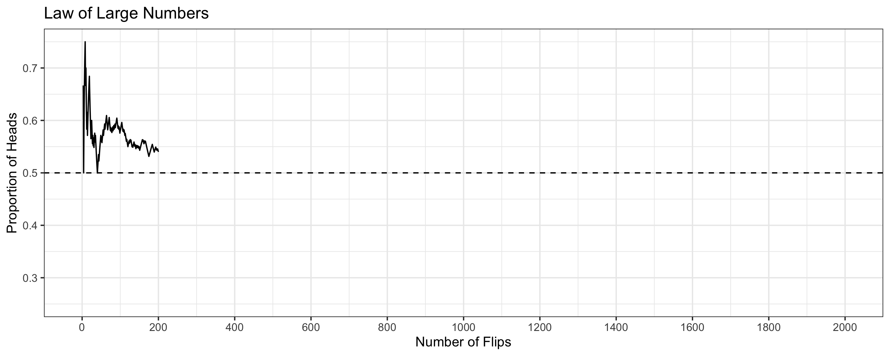
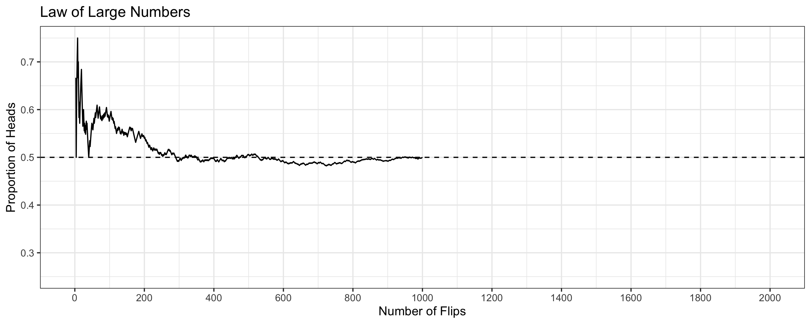
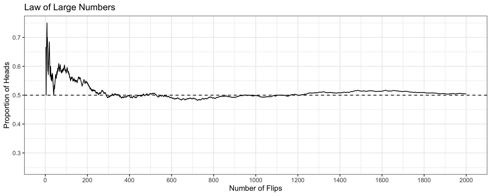

Probability I
Megan Ayers
Math 141 | Spring 2026
Friday, Week 2
Goals For Today
- Introduce probability theory
- See the Law of Large Numbers
- Define and practice using key rules of probability
Probability Theory
Random Processes and Events
Probability Theory: the study and quantification of uncertainty/randomness in outcomes of repeated experiments.
A random process is one which we know what results could happen, but don’t know which particular result will happen.
- Can be used to model processes that are complicated, but not truly random, to figure out how they work
- Example: Rolling a 6-sided die
An event is a potential result of some particular random process.
- Example: If we roll a 6-sided die, one event is “the die rolls a 6”. Another is “the die rolls an odd number”.
- The statement “it will rain at 9am in Portland on 2/6” is an event, but not one for the die-rolling process.
Perception of Probability
We will soon define the word “probability.” Before that, consider the following questions in small groups:
- When flipping a fair coin, we might say that “the probability of flipping Heads is 0.5.” How do you interpret this sentence?
- If I flip this coin over and over, roughly 50% will be Heads.
- Heads and Tails are equally plausible.
- Both a and b make sense.
- An election is coming up and a pollster claims “candidate A has a 0.9 probability of winning”. How do you interpret this sentence?
- If we observe the election over and over, candidate A will win roughly 90% of the time.
- Candidate A is much more likely to win than to lose.
- Both a and b make sense.
Perception of Probability (Notes)
- If you answered (a), you may naturally subscribe to the “Frequentist” view of probability (long-run proportion)
- If you answered (b), you may naturally subscribe to the “Bayesian” view of probability (relative chance)
- If you answered (c), you fall somewhere in between!
Neither definition is “correct”. Statisticians are divided on how to interpret probability.
- In this class, we’ll discuss frequentist probability (see next slide)
Probability
The “frequentist” definition of probability is…
Definition: Probability
The probability of a particular event is the proportion of times the event would occur, if we observed the random process an arbitrarily large number of times.
To say that a coin has 50% probability of landing heads, means that…
- In a large number of coin flips, we expect the proportion of heads to be close to 0.5
- This proportion should generally get closer to 0.5 as we do more and more flips
Since probabilities are defined as a proportion, they will always be values between 0 and 1.
For brevity, we’ll represent statements like the probability of the event “the coin lands heads” is 50% using the notation: \[ P(\textrm{Heads})=0.5 \quad \textrm{or} \quad P(H)=0.5 \]
Law of Large Numbers
The probability of an event refers to the long-run tendency of the proportion.
- Observed proportions can deviate from expected probabilities in a finite number of trials
- But as you conduct more and more trials, the deviation decreases
The proportion of heads deviates wildly from 0.5 during the first 200 flips
Law of Large Numbers
The probability of an event refers to the long-run tendency of the proportion.
- Observed proportions can deviate from expected probabilities in a finite number of trials
- But as you conduct more and more trials, the deviation decreases

The proportion of heads gets closer to 0.5 after 1000 flips
Law of Large Numbers
The probability of an event refers to the long-run tendency of the proportion.
- Observed proportions can deviate from expected probabilities in a finite number of trials
- But as you conduct more and more trials, the deviation decreases

The proportion of heads is very close to 0.5 after 2000 flips!
Law of Large Numbers
The probability of an event refers to the long-run tendency of the proportion.
- Observed proportions can deviate from expected probabilities in a finite number of trials
- But as you conduct more and more trials, the deviation decreases

This is the Law of Large Numbers in effect!
Check Your Understanding
Suppose you’re interested in winning the Powerball Jackpot, where the chance of winning is 1 in 292 million. You buy a single lottery ticket and wait to see if you won.
- When playing the lottery (a random process), what are the two possible outcomes (events)?
- Write down the probability of your two events.
- If you played the lottery 1 million times, should you expect to win? What about 292 million times?
- If you played the lottery 1 billion times, are you guaranteed to win?
Check Your Understanding (Answers)
- When playing the lottery (a random process), what are the two possible outcomes (events)?
- Winning and Losing
- Write down the probability of your two events.
- P(Winning) = 1/292,000,000
- P(Losing) = 291,999,999/292,000,000 or 1 - P(Winning)
- If you played the lottery 1 million times, should you expect to win? What about 292 million times?
- You shouldn’t expect to win after playing 1 million times. But you might win after playing 292 million times!
- If you played the lottery 1 billion times, are you guaranteed to win?
- You are never guaranteed to win! Each time you play, your chance of winning is so small!
Probability Models
We can formalize the connection between random processes/events with probabilities using a Probability Model
A probability model has two components:
- A list of the possible results of a random process (called events)
- A rule (called the probability function) that assigns to each event a probability between 0 and 1, in a consistent manner.
Example: Probability Model for a Coin Toss:
- Heads or Tails
- \(P(Heads) = 0.5\) and \(P(Tails) = 0.5\)
When discussing probability, we always (explicitly or implicitly) define a probability model.
- Probability models help us make sense of complex, random processes.
Rules of Probability
Definition: Disjoint Events
Two events \(A\) and \(B\) are said to be mutually exclusive (or disjoint) if it is not possible for both to occur at the same time.
Example: Single Roll of a Die
- Let \(A\) denote the event “a 1 is rolled on 6-sided die”
- Let \(B\) denote the event “a 2 is rolled on 6-sided die”
- \(A\) and \(B\) are disjoint events for the random process
The Addition Rule
Theorem: Addition Rule
The probability that at least one event occurs in a pair of disjoint events is the sum of their individual probabilities: \[ P(A \textrm{ or } B) = P(A) + P(B) \]
Q: When a die is rolled, what is the probability that an odd number is rolled?
\[ \begin{aligned} P( \textrm{Odd} ) &= P(\textrm{roll a 1, 3, or 5})\\ &= P(\textrm{roll a 1}) + P(\textrm{roll a 3}) + P(\textrm{roll a 5}) && \text{(by the Addition Rule)}\\ &= \frac{1}{6} + \frac{1}{6} + \frac{1}{6} \\ &= \frac{3}{6} \end{aligned} \]
The Addition Rule: Only for Disjoint events!
Theorem: Addition Rule
The probability that at least one event occurs in a pair of disjoint events is the sum of their individual probabilities: \[ P(A \textrm{ or } B) = P(A) + P(B) \]
Q: In a die-roll, what’s the probability we get an even number?
- \(P(\text{Even}) = P(\text{ Roll a 2, 4, or 6}) = \frac{3}{6} = \frac{1}{2}\)
Q: In a die-roll, what’s the probability we get at least a 3?
- \(P(\text{$\geq 3$}) = P(\text{ Roll a 3, 4, 5, or 6}) = \frac{4}{6} = \frac{2}{3}\)
Q: What’s the probability you get an even number OR at least a 3?
- \(P(\text{ Even OR $\geq 3$}) = P(\text{ Roll a 2, 3, 4, 5, 6}) = \frac{5}{6}\)
- But \(P(\text{Even}) + P(\geq 3) = \frac{1}{2} + \frac{2}{3} = \frac{7}{6}\)… that’s not even between 0 and 1!
Complementary Events
The complement to an event \(A\) (denoted \(A^c\)) is the event that occurs exactly when the original does not.
- If \(A\) is the event that a 1 is rolled on a die, then \(A^c\) is the event that any other number (2,3,4,5, or 6) is rolled.
Theorem: Complement Rule
The probability that the complement of an event occurs is 1 minus the probability of the event: \[ P(A^c) = 1 - P(A) \]
What is the probability that any number other than a 1 is rolled on a fair 6-sided die?
\[ P(\textrm{roll something other than a 1}) = 1 - P( \textrm{roll a 1}) = 1 - \frac{1}{6} = \frac{5}{6} \]
Check Your Understanding
Theorem: Addition Rule
The probability that at least one event occurs in a pair of disjoint events is the sum of their individual probabilities: \[ P(A \textrm{ or } B) = P(A) + P(B) \]
Theorem: Complement Rule
The probability that the complement of an event occurs is 1 minus the probability of the event: \[ P(A^c) = 1 - P(A) \]
In the city of Portland, there’s rain on 60% of days and snow on 1% of days.
On a given day, what’s the probability that it doesn’t rain?
On a given day, what’s the probability that it rains OR doesn’t rain?
What if I told you it rains OR snows 61% of days in Portland. What’s the flaw in my reasoning?
Check Your Understanding (Answers)
In the city of Portland, there’s rain on 60% of days and snow on 1% of days.
- On a given day, what’s the probability that it doesn’t rain?
\[P(\text{Doesn't Rain}) = P(\text{Rain}^c) = 1-P(\text{Rain}) = 1-0.6=0.4\]
- On a given day, what’s the probability that it rains OR doesn’t rain?
\[P(\text{Rain or Doesn't Rain}) = P(\text{Rain}) + P(\text{Doesn't Rain}) = 0.6+0.4=1\]
- What if I told you it rains OR snows 61% of days in Portland. What’s the flaw in my reasoning?
It can rain and snow in one day! Thus, we can’t use the addition rule!
Recap
Today we defined:
- Random processes, events, probability, probability models
- Law of Large Numbers
- Addition Rule and Complement Rule
Next time
- More probability rules and an activity!